5 Methodenteil in quarto
quarto ist ein Markdown-basiertes Dokumenten-Format, mit dem Dokumente direkt in RStudio erstellt werden und Ergebnisse, Tabellen und Abbildungen eingebunden werden können. Dieses Skript hier wurde auch in quarto erstellt.
Dabei ist neben der direkten Einbindung von Auswertungen in das Dokument der große Vorteil, dass in verschiedene Ausgabeformate gerendert werden kann. Zum Beispiel können Dokumente parallel in ein Word-Dokument und ein tex-File exportiert werden.
In RStudio kann über File -> New File -> Quarto Document ein neues Dokument erstellt werden. Daraufhin öffnet sich ein Dialog, in dem Einstellungen für das Dokument getroffen werden.
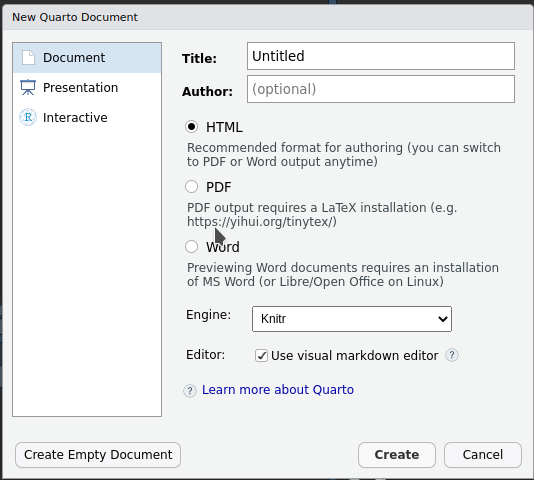
Die Felder können erstmal ruhig so gelassen werden wie sie sind, alle Einstellungen lassen sich auch im Nachhinein anpassen.
Das neu erstellte Dokument wird (ab RStudio 1.4) als Standard im visuellen Editor geöffnet.
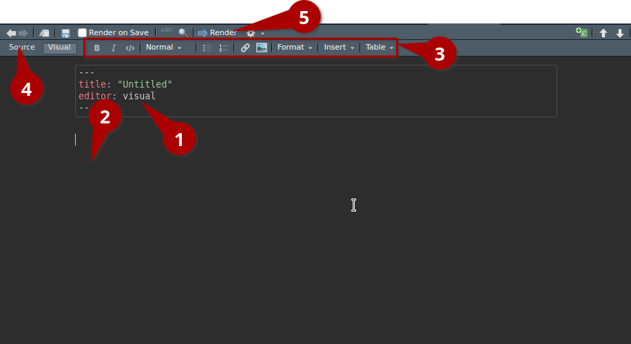
Quarto-Dokumente basieren auf zwei Teilen, die in einem file oder getrennt voneinander existieren können. Der erste Teil der der sogenannte YAML-Header(1 in Abbildung 5.2), der die Parameter zum Rendern des Dokuments definiert - der zweite Teil ist das eigentliche Dokument(2).
Im neu erstellten file erkennen wir des YAML-Header durch die Eingrenzung aus je drei Bindestrichen. Nach der Erstellung sind hier schon der Titel des Dokuments “Untitled” und die Nutzung des visuellen Editors festgelegt.
Der Rest des Files ist ein Markdown-Dokument in dem mit markdown-Formatierung Fließtext geschrieben werden kann. Seit Einführung des visuellen Editors ist aber selbst diese Syntax nicht mehr nötig, Text kann wie aus anderen Verarbeitungsprogrammen bekannt mit den Bedienfeldern(3) formatiert werden. Durch Drücken der Source-Schaltfläche (4) kann aber auch immer noch in den Source-Editor zurückgekehrt werden.
Wie schon angedeutet ist quarto kein WYSIWYG1-Editor, sondern erfordert das Rendern von Dokumenten. Dazu kann auf “Render”(5) geklickt oder Strg + Shift + K als Shortcut genutzt werden. Auf diesen Befehl hin wird neben dem qmd-file ein Output generiert in dem die formatierte Version zu finden ist. Beim ersten Rendern öffnet sich ein Dialog, in dem noch ein file-Name und Speicherort angegeben wird.
5.1 Code-chunks
Der große Vorteil quartos ist es, dass wir Code-chunks im Dokument anlegen können, deren Output direkt in das gerenderte Ergebnis eingebunden wird.
Dazu kann mit der “Insert new code chunk”-Schaltfläche (1 in Abbildung 5.3) oben rechts oder Strg + Alt + I ein neuer Chunk eingefügt werden, der an die Cursor-Stelle im Dokument eingefügt wird (2).
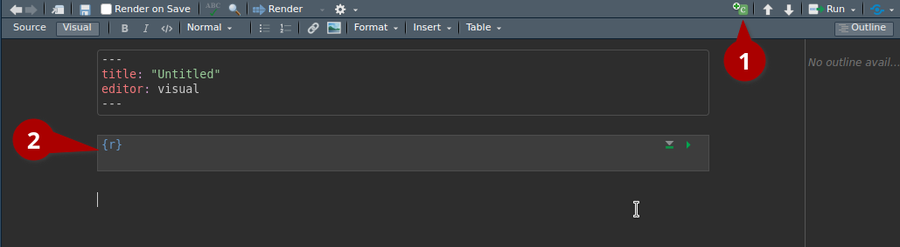
In der ersten Zeile des neuen Chunks steht die Sprache. In den Chunk kann dann wie in ein R-Skript Code eingefügt werden.
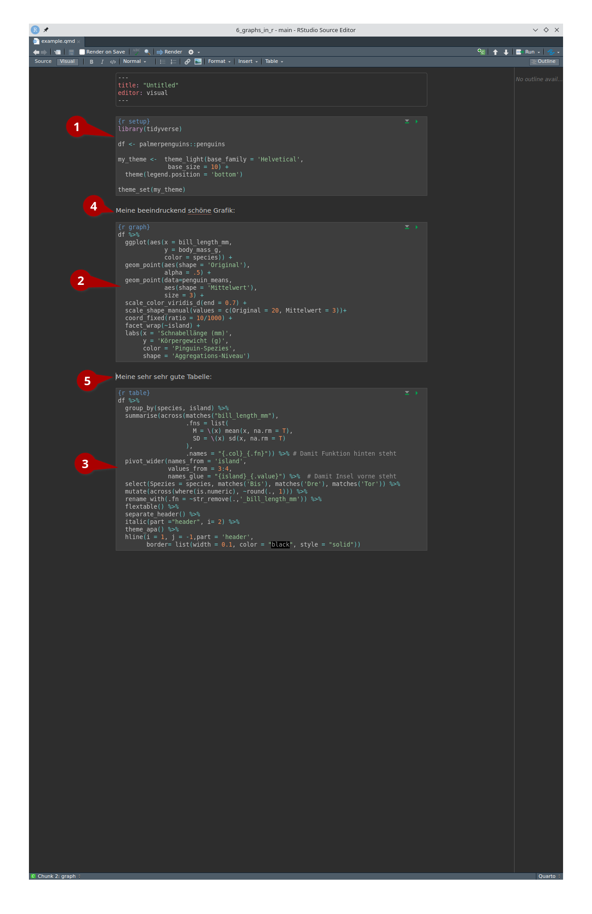
In Abbildung 5.4 ist das neue file mit dem Code für die letzte Tabelle aus Chapter 4 und der Beispielgrafik aus Chapter 3 eingefügt.
Der erste Chunk (1) ist dabei nur dafür da um Pakete und die Daten zu laden. Im zweiten Chunk (2) wird die Tabelle, im dritten Chunk (3) die Grafik erstellt. Der Text hinter dem r in der ersten Zeile der Chunks ist nur ein Titel und hat erstmal keine weitere Bedeutung.
Wie in (4) und (5) zu sehen ist, kann zwischen den Chunks einfach Text eingefügt werden.
Die Chunks können dabei wie ein ganz normales R-Skript genutzt werden und der Code an der Zeile des Cursors kann mit Strg + Enter ausgeführt werden. Der Output erscheint dabei unter dem Chunk, kann mit Hilfe der Einstellungen aber auch in die Konsole verschoben werden.
Damit haben wir die Basics die wir brauchen.
5.2 YAML-Header
Um das Ergebnis des Renderns anzupassen können wir den YAML-Header setzen.
Für dieses Skript konzentrieren wir uns auf Output im docx-Format, Quarto bietet aber wesentlich mehr Optionen. Die Doku für alle unterstützten Header-Optionen für docx findet sich hier.
Für uns sind erstmal die folgenden Parameter wichtig:
format: docx # setzt das Format des Outputs
fig-width: 6.56 # setzt 6.56 Zoll als Standard-Breite für alle Plot-Outputs
fig-dpi: 300 # setzt alle plots auf 300 dpiNach Klick auf “Render” kann ich neben dem erstellten qmd-file das in Abbildung 5.5 abgebildete Dokument finden.
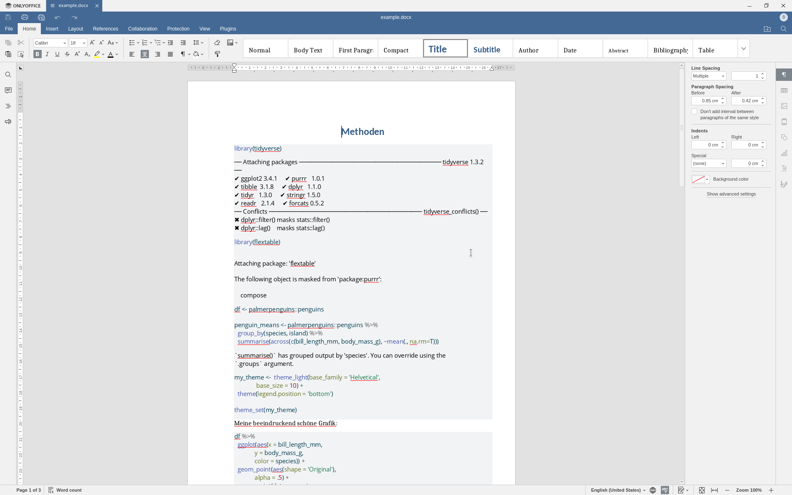
Der Output der Chunks wurde also erfolgreich in das Dokument übergeben, ich brauche aber die ganzen messages nicht.
Um diese zu unterdrücken kann ich den YAML-Header einfach um den folgenden Teil ergänzen:
execute:
warning: false
message: falseWas zu folgendem Output führt:
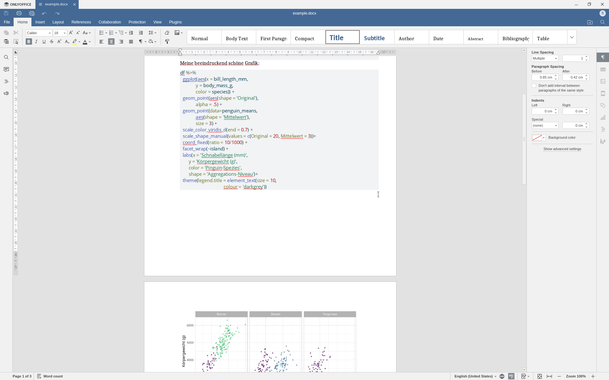 Schon viel besser, für einen Methodenteil stört aber noch der Code zwischen den Outputs. Um das rausschreiben der Chunks zu unterdrücken ergänzen wir nur noch echo: false um bei folgendem vollständigen Header zu enden:
title: "Methoden"
editor: visual
format: docx
fig-width: 6.56
fig-dpi: 300
execute:
warning: false
message: false
echo: falseUnd schon ist das Ergebnis nicht mehr allzu schlecht:
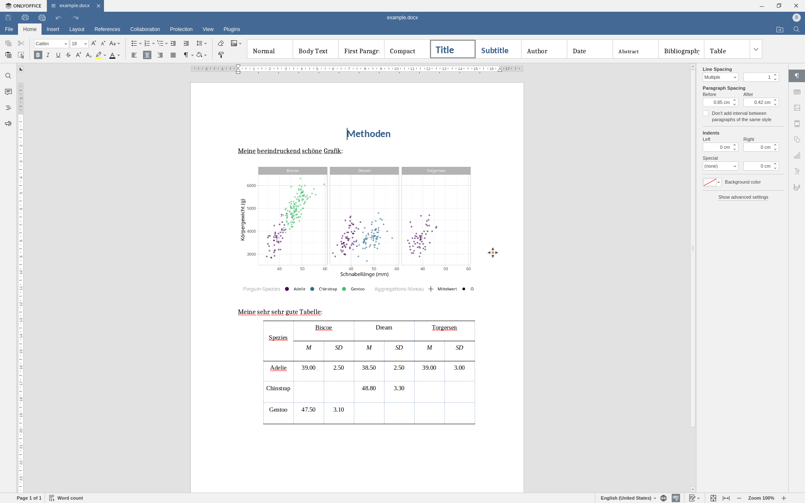
5.3 Code-Chunk-Optionen
Die letzten drei Parameter waren Beispiele für chunk-Optionen, die das Verhalten von Chunks anpassen. Das kann entweder global im YAML-Header unter execute oder lokal pro Chunk gesetzt werden.
Auf der quarto-Seite gibt es einen Überblick über alle Optionen, wir konzentrieren uns aber erstmal auf einen kleinen Teil zur Beschriftung von Grafiken und Tabellen.
Um eine Grafik zu beschriften und im Text referenzierbar zu machen,müssen wir zwei Optionen für den Chunk setzten: label und fig-cap. In Abbildung 5.7 ist ein Beispiel wie das aussehen könnte. Die Chunk-Optionen werden dabei immer durch ein so genanntes “pipe-comment” eingeleitet.
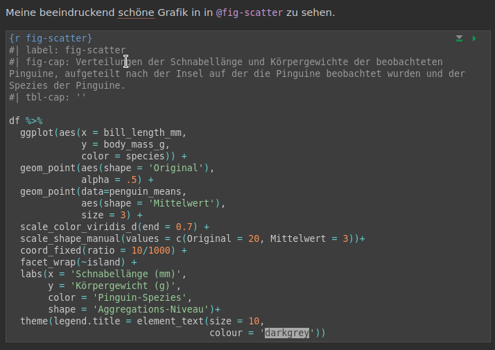
Im text können wir die Grafik dann mit @fig-scatter referenzieren. Das label für Grafiken muss dabei durch “fig-” eingeleitet und referenziert werden, sonst schlägt die Formatierung fehl.
Ähnliche Parameter sind auch für Tabellen implementiert, hier ist der Prefix nur tbl. Leider funktioniert das Crossreferenzieren in den aktuellen Versionen von quarto und flextable noch nicht reibungslos, es gibt aber einen workaround.
Statt mit @tbl-table müssen wir die Tabelle mit einem Call an das officer-Paket im Text referenzieren. Sonst ist das Format aber ähnlich, wie in Abbildung 5.8 zu sehen ist..
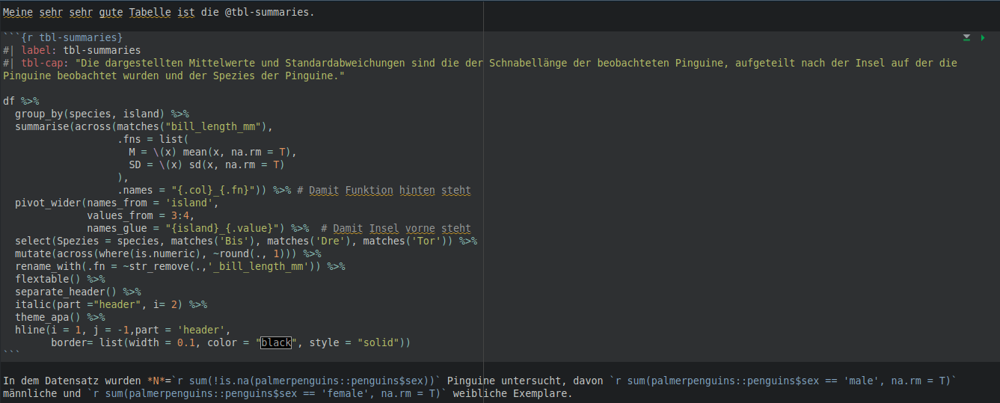
Der Output des so angepassten Skripts ist in Abbildung 5.9 zu sehen.
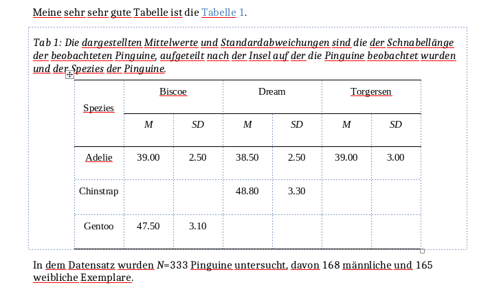
Offensichtlich funktioniert auch der Workaround noch nicht perfekt - das Problem ist aber bekannt.
In dem Beispiel haben wir aber einen weiteren Vorteil von Quarto gesehen: Inline Code-Chunks
5.4 Inline Code-Chunks
Im Fließtext kann mit der folgenden Syntax auf R zugegriffen und Output generiert werden:
`r <some code>`Wozu ist das nützlich? Wir können so einfach statistische Kennwerte ohne sie kopieren zu müssen in den Text einflißen lassen! Und jedes mal wenn das Ergebnis erstellt wird, werden die Werte neu berechnet. So kann keine Aktualisierung vergessen werden.
Wir könnten unserem Beispiel-File so beispielsweise eine Stichprobenbeschreibung hinzufügen, wie in Abbildung 5.10 zu sehen ist.
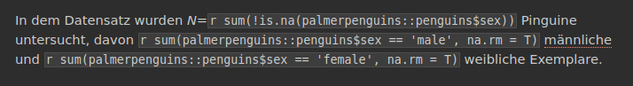
Die Ergebnisse im docx können in Abbildung 5.11 gesehen werden.
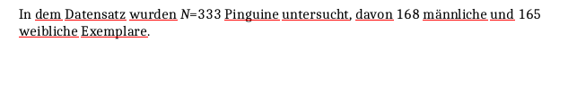
What you see is what you get↩︎